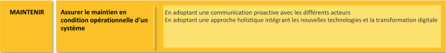
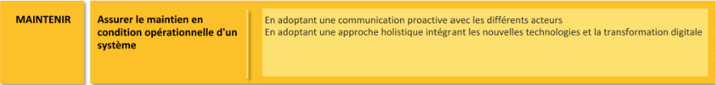

Stage chez Enedis
Ce stage s’est déroulé du 6 janvier au 14 mars à Enedis Orvault, dans le domaine de la distribution électrique. Il m’a permis de découvrir le quotidien des techniciens réseau HTA/BT et de contribuer à la modernisation des infrastructures.
Contexte et objectifs
Enedis est le gestionnaire du réseau de distribution d’électricité en France. Mon stage s’inscrivait dans une démarche de fiabilisation et de modernisation des postes sources HTA/BT, ainsi que de maintenance préventive des équipements de protection.
Activités réalisées
Modernisation de postes HTA/BT
J’ai accompagné les techniciens lors d’interventions sur les disjoncteurs HTA, avec des opérations de contrôle, démontage, nettoyage et tests fonctionnels.


Recherche de défauts et cartographie
J’ai participé à la détection de défauts à l’aide d’outils de mesure spécifiques et d’un détecteur RDD. L’analyse des réseaux a été appuyée par l’utilisation d’outils de cartographie SIG.

Préparation des dossiers d’intervention
En amont des opérations, j’ai contribué à la préparation des interventions : lecture de plans, consultation des schémas électriques, vérification du matériel.

Maintenance des disjoncteurs
J’ai réalisé des opérations de maintenance sur des disjoncteurs HTA (type 1/2 rame), incluant : démontage, nettoyage, graissage des parties mécaniques et vérification des contacts.
 

Vérification du bon fonctionnement
Des tests fonctionnels et mesures ont été réalisés pour vérifier la conformité et la performance des équipements. Ces essais étaient documentés pour assurer la traçabilité.
Compétences développées
Ce stage m’a permis de renforcer les compétences suivantes :
- Lecture et interprétation de schémas électriques
- Utilisation d’outils techniques sur le terrain
- Respect des consignes de sécurité en environnement HTA
- Communication avec les équipes techniques
Bilan personnel
Cette expérience m’a permis d’intégrer un environnement industriel concret et de m’impliquer dans des missions à responsabilité. J’ai gagné en rigueur, en autonomie, et développé une meilleure compréhension des enjeux techniques de la distribution électrique.